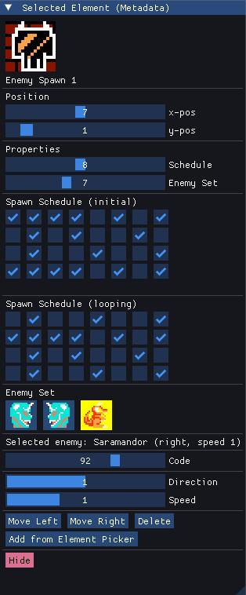
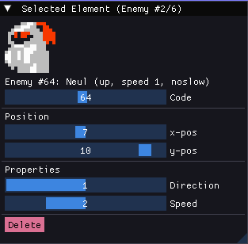
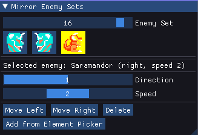

Thank you for checking out Solomon's Keychain. With this tool you will be able to alter the level data and game metadata for Solomon's Key (NES). We support altering the US, EU and JP versions of the game. The application also supports expanding the ROM to vastly increase data size.
Check out the various sections of this document for an explanation of the program's functionality.
In order to use the level editor efficiently, it is recommended to read the documentation.
When starting the editor, the application will look for NES-files in the application directory, and load any if found.
The application can also be started from the command-line with path to a NES-file as parameter. This means you can drag and drop a ROM file on the application to immediately load the file, at least on Windows.
When the editor starts successfully, it will tell you which NES-ROM file is loaded, which region the ROM belongs to, and which directory it uses as the working directory.
If the US-version of the ROM was loaded, it can be expanded to overcome data size limits.
There are three element types in the editor: Items, Monsters and Metadata. You can select elements from the element picker, and right-click on the gameboard to insert them. Metadata elements are blocks, constellation background, key position, door position, player start position and so on. The item elements are game items, which can be hidden or inside breakable blocks. The third type, enemies, represents game enemies and other sprites; fairies and Mighty Bomb Jack.
Your work can be stored as a NES-ROM, IPS patch or xml-files. We recommend using xml-files during development, and IPS when distributing your patch. xml-files have no space-limitations like the ROM-files, and they are easier to use in version control systems like git, since they are text files.
When saving your work as a NES-file or an IPS-file, the editor checks if you exceed the space limits imposed by the game. Check the output section of the Main Window to see if your file was saved successfully, or if a data section was too big. When a data section is too big, you need to delete elements (items, enemies) from the section to save NES or IPS-files.
When opening the editor, the program looks for a file skc_config.xml in the same directory as the executable, or in the folder from which the NES-ROM was loaded. This is a configuration XML which lets you configure the editor's graphics and layouts, ROM-data offsets and so on.
The default configuration xml which ships with the editor should be fine for most users, but we explain the configuration format for advanced modders in a separate section.
- Save xml button: Saves your work as a group of xmls, stored under a subfolder ./xml of the loaded ROM-file. This is the recommended file format to use for development.
- Save IPS button: Saves your work as an IPS-patch, which is the difference between your work and the initially loaded NES-file. This is the recommended format for patch distribution, as long as the base ROM loaded is the "official" version.
- Save NES button: Saves your work as an NES-file. This is the recommended format when testing your levels. If you loaded "SK.nes", the output filename will be "SK-out.nes" to avoid overwriting your base ROM which was loaded. If you want to overwrite the file instead, hold Shift when saving.
- Expand ROM button: Only available when the base US-version of the ROM is loaded. This button will increase the ROM-size, which removes a lot of restrictions. Each demon mirror will get its own drop schedule and enemy set (enemy sets can contain up to 7 enemies), the output ROMs will not have any item data restrictions, and 15 enemies can be added to each level.
- Load xml button: Will load xml-files from the xml-subfolder, if they exist. If the metadata xml indicates that it comes from an expanded ROM (by checking if there are 53x2 demon mirror drop schedules), the ROM will be expanded automatically if the currently loaded ROM is the base US-version
- Drop Schedules button: Will open/close the Demon Mirror Drop Schedules-window. Button is yellow when the window is active. See separate section.
- Enemy Sets button: Will open/close the Demon Mirror Enemy Sets-window. Button is yellow when the window is active. See separate section.
- Level-slider. Use to select which level to edit.
- Finally a section for output messages follow.
The Element Picker lets you pick items to place in the level. There are three element modes; metadata, items and enemies. The current mode will be highlighted. To place the selected element in the level, simply right click at the Levels-window to insert it at any given location.
The layout, tooltip descriptions and icon graphics of the element picker can be altered in the configuration xml.
- Meta button: Enter metadata editing mode
- Items button: Enter items editing mode
- Enemies button: Enter enemies editing mode
The level window is where level editing takes place. You can click any element on the board (apart from blocks and constellation graphics), move it around and change its properties. You can also insert new elements from the element picker.
- Right Click: Will insert the selected element picker element at the location, unless one exists there already. If you want to place more than one enemy at the same location - make one in a free location and move it.
- Left Click: Select item on the gameboard. Will change element mode to the type of the selected element. (if you are in items editing mode and click on a metadata item, the editing mode will change to metadata) The selected element will be outlined by a pulsating yellow square
- Shift + Left Click: Move the selected element to the clicked location
- Delete keyboard button: Delete selected board element. (if this element is a door or a key, it will be hidden instead - and other metadata items cannot be deleted)
- 1,2,3 keyboard buttons: When held, will draw empty tiles, brown blocks and white blocks under the mouse cursor, respectively
- Tab keyboard button: Will cycle between items of the same type. Hold shift to browse backward.
- Escape keyboard button: Toggles foreground rendering on/off
- G keyboard button: Toggle gridlines
- Ctrl+S keyboard buttons: Save NES-file. Hold Shift to overwrite the input file
- Up keyboard button: Go to next level
- Down keyboard button: Go to previous level
- Home keyboard button: Go to first level
- End keyboard button: Go to last level
- Mousewheel Up/Down: Scroll between levels, as long as no window is hovered
- Tileset slider: Will set the level's tileset, out of 3 possible tilesets.
- Time Decrease Rate slider: Increase to make the level's time decrease faster in the game
- Demonhead/Saramandor Lifetime slider: Determines how long the spawned enemies will live before despawning. The higher the number, the longer they live
- Remove constellation button: Removes constellation from the level, if it has one
The Selected Element-window will allow altering all properties of the selected element. This window will look different depending on which type of element is selected.
If we are in metadata mode and select a Demon Mirror on the board, the properties will look like this.
All elements have position-sliders, which lets you change its position. (an alternative to Shift+Click) For Demon Mirrors, you can also set the drop schedule and enemy set. For expanded ROMs this should not be necessary, as each mirror has its own schedule and enemy set.
You can also edit the data of the drop schedule and enemy set used by the selected mirror. This is an alternative to the separate windows for editing this data. If you are editing a "vanilla" ROM, one that has not been expanded, note that several mirrors share the same drop schedules and enemy sets.
For the key position, you can also set properties "hidden" and "in block".
The "hide"-button will move the metadata element to position (0, -1).
For element type Item, the properties are positions, as well as making the item hidden or stored in a block. In addition there is a delete-button, which is an alternative to keyboard button Delete
The "code"-slider will let you cycle through item codes at will.
For element type Enemy, the properties are positions, as well as speed and direction, depending on the enemy.
The "code"-slider will let you cycle through enemy codes at will.

The Mirror Enemy Sets-window will let you change and rearrange the enemy sets which can be used by Demon Mirrors. Each set consists of one or more enemies, and these will be cycled through as they are dropped by a demon mirror spawn point. (Technically an enemy set can be empty, but if any demon mirror uses such an enemy set, the game will crash)
- Enemy Set slider: Select enemy set to edit
- Enemy graphical button: Select a character in the current enemy set. Selected character will have a yellow background
- Direction/Speed slider: Set properties for selected enemy
- Move Left/Right buttons: Move selected enemy to the left or the right in the cycle
- Delete button: Remove selected enemy
- Add from Element Picker button: Insert selected enemy from the Element Picker into the current Enemy Set
The Mirror Drop Schedules-window will let you change the enemy drop schedules which can be used by Demon Mirrors. Each set consists of an intial schedule, and a looping schedule. When the level starts, the initial set is played through once - and then the looping section is repeatedly cycled through.
A selected checkbox means an enemy will drop at that time. The game time between each checkbox seems to be a little lower than 100.
When the levelset is saved as xml, 54 xml-files are created in a sufolder xml of the loaded NES-file: 53 files for the levels, and one for the metadata.
The xml for metadata configuration is called levels-metadata.xml, and has the following tags:
- skchain/level_meta_items: Positions of movable meta-items, like Solomon's Seals and Mighty Bomb Jacks
- skchain/schedules: The demon mirror drop schedules. 64-values 0 and 1, corresponding to the checkboxes in the corresponding editor window
- skchain/enemy_sets: The demon mirror enemy sets. Enemy numbers are comma-separated
The level xml-files are named level-01.xml to level-53.xml, and have the following tags and attributes:
-
skchain/level attributes:
- start_position: Player Start Position
- door_position: Door Position
- key_position: Key Position
- key_status: Key Status (normal, hidden or in-block - and time decrease rate)
- spawn_enemy_lifetime: How long Saramandors and Demonheads live before despawning
- time_decrease_rate: In-game time countdown rate
- tileset: Level tileset number
- skchain/level/blocks: 12 rows of 16 blocks. 0 is no block, 1 is brown and 2 is white block. 3 means both brown and white are set
- skchain/level/items: All items in the level; item code and position
- skchain/level/enemies: All enemies in the level; enemy code and position
- skchain/level/mirrors: Two demon mirrors, with position, drop schedule no and enemy set no
Program written in C++20, using the following external libraries:
Dear ImGui
pugixml
SDL2 (2.24.0)
Thanks to the developers of skedit, for figuring out a way to expand the ROM
- Added support for ROM expansion, to exceed the original size limits! (adds compatibility with skedit)
- Added support for editing demon mirror drop rate schedules and enemy sets directly from the Selected Demon Mirror-window
- Added support for drawing background blocks regardless of editing mode (using keyboard buttons 1-3)
- Made it possible to hide all metadata elements (placing them at position (0, -1))
- Added support for setting item/enemy code directly - among all possible codes - from the "Selected Element"-window
- Can now turn off foreground rendering by holding keyboard button Escape
- The application will now automatically deduce the ROM region (US/EU/JP) based on the input ROM-file, and load the corresponding configuration.
- Released version 0.1
Apart from fixing bugs as they are discovered, the following ideas are possible extensions in the future:
- Allow bmp import/export to change the graphics with bmp-files
- Clean up the code, and reduce wasted cycles
If the program does not start at all, check the file skc_errors.log which will be created when an unhandled exception occurs.
Make sure you start the application with the Solomon's Key NES ROM in the same folder as the executable, or drag-and-drop a file on the application to load it.
If Windows gives you a message that the program cannot be started, make sure you have the x64 Visual C++ Redistributables. This should be part of most Windows installations by default, but can also be found at Microsoft Support Visual C++ downloads.
For feedback, suggestions, bug reports and questions, the author (Kai E. Frøland aka "kaimitai") can be reached via email, Threema or GitHub.
When loading a base US-version of the ROM, the editor gives you the option of expanding the ROM. When the ROM is expanded, the data section sizes are greatly increased. Each Demon Mirror gets its own drop schedule and enemy set (with up to 7 enemies in each), the levels can have arbitrarily many items, and each level can have up to 15 enemies.
When converting a base ROM to an expanded ROM, a patch is applied. This patch changes the mapper from number 3 to 66, and alters some gamecode to read data from other locations. There are some fundamental differences in the way the data is stored in an original ROM versus an expanded ROM. An overview of the expanded ROM data layout follows.
The level data starts at offset 0xc010, and comes in 53 contiguous blocks of 256 bytes - one block per level. The following table describes the layout of such a block:
| Local Offset | Length (bytes) | Description |
|---|---|---|
| 0 | 192 | 16x12 item codes, one for each tile of the gameboard. Empty tiles and brown blocks are represented with item code 0x10 and 0x90 respectively. White blocks are represented by item code 0xf8 in this section. |
| 192 | 1 | Constant 0 |
| 193 | 1 | Constant 1 |
| 194 | 1 | Constant 0 |
| 195 | 1 | Constant 1 |
| 196 | 1 | Key Status and Time Decrease Rate |
| 197 | 1 | Door Position |
| 198 | 1 | Key Position |
| 199 | 1 | Player Start Position |
| 200 | 1 | Mirror #1 Position |
| 201 | 1 | Mirror #2 Position |
| 202 | 1 | Item data delimiter (0xd0-0xfb): Tileset and Constellation Encoding |
| 203 | 1 | Constellation Position, if the previous byte was valued 0xf0-0xfb |
| 204 | 4 | Unused bytes |
| 208 | 32 | Enemy data section; spawn lifetime followed by enemies |
| 240 | 8 | Mirror #1 Enemy Set |
| 248 | 8 | Mirror #2 Enemy Set |
After the 53 256-byte blocks, we arrive at ROM offset 0xf510. From here, 106 8-byte blocks follow. These are the drop schedules for mirror #1 and #2 alternating, from level 1 to 53.
On average, you will have much more to work with when the ROM is expanded, compared to a vanilla hack. There are some cons though:
- Expanded ROMs can have 15 enemies per level, vanilla ROMs can have up to 16
- Expanded ROMs can have 7 enemies per demon mirror enemy set, vanilla ROMs can have up to 25 (or 41 if we turn all 17 sets into one)
Most of the behavior of the editor is defined in skc_config.xml. If you want to alter this file, make sure you keep a backup, as the application requires this file to start. By changing the config xml, you can set your own graphics, tooltip descriptions, element picker layout and ROM memory map. Numbers starting with 0x are considered hex-values, otherwise decimal. A description of the tags and attributes follows:
- skchain/regions: Rules for deducing region code for the ROM file. The region-tags have a name (region code), and this region will apply to the ROM if the rule is fulfilled. The rules are comma-separated lists of ROM offsets and values (these pairs are colon-separated). If the byte value for all these offsets match the given byte values in the rule, the region code is applied.
- The region code will be used in the ROM metadata configuration to determine which values will be used. Attribute "region" will be a comma-separated list of region codes.
- skchain/rom_metadata/offset_mirror_rate_table: ROM offset to the demon mirror drop rate table
- skchain/rom_metadata/offset_mirror_enemy_table: ROM offset to the demon enemy set table
- skchain/rom_metadata/offset_enemy_table: ROM offset to the levels enemy data table
- skchain/rom_metadata/offset_block_data: ROM offset to the levels block data
- skchain/rom_metadata/offset_item_table: ROM offset to the levels item data table
- skchain/rom_metadata/length_mirror_rate_data: Length, in bytes, of the demon mirror rate data section
- skchain/rom_metadata/length_mirror_enemy_data: Length, in bytes, of the demon mirror enemy sets data section
- skchain/rom_metadata/length_enemy_data: Length, in bytes, of the enemy data section
- skchain/rom_metadata/length_item_data: Length, in bytes, of the item data section
- skchain/rom_metadata/offset_gfx: ROM offset to the graphics
- skchain/rom_metadata/rom_ram_diff: Diff used when converting ROM to RAM address and vice versa
- skchain/rom_metadata/level_count: Number of levels in the game
- skchain/rom_metadata/mirror_rate_count: Number of demon mirror drop schedules
- skchain/rom_metadata/mirror_enemy_count: Number of demon mirror enemy sets
- skchain/rom_metadata/nes_tile_count: Number of 8x8 NES tiles to be loaded from the gfx-section of the ROM
-
skchain/rom_metadata/item_bitmasks: Item bitmasks (game metadata):
- region: Comma-separated list of region codes this bitmask applies for
- level_no: Which level the bitmask belongs to to (count from 0)
- item_no: Which item the bitmask represents
- offset: ROM offset of the start of the 24-byte bitmask
-
skchain/rom_metadata/level_meta_items: List of meta items (game metadata, will be appended to the element picker):
- region: If given, the ROM's region code must be in this comma-separated list of region codes for the meta item to be included
- description: In-editor description of the meta-tile
- level_no: Which level the meta-item appears on (count from 0)
- animation: The gfx-tile to represent this item with (see gfx-section for details)
- transparent: Draw as a transparent tile in the editor
- offset: ROM-offset to the positional byte. If a position is given instead of a ROM address, the meta-item will be immovable
- skchain/rom_metadata/level_palettes: Which palette to use for each level. See gfx-section for palette creation
-
skchain/metadata_definitions, Element Picker definitions:
- no: Code of the metadata item (hard-coded in the editor)
- description: Element Picker tooltip text
- animation: Gfx-tile to use for this element
-
skchain/item_definitions, Element Picker definitions:
- no: Code of the item
- description: Element Picker tooltip text
- animation: Gfx-tile to use for this element
-
skchain/enemy_definitions, Element Picker definitions:
- no: Code of the enemy
- description: Element Picker tooltip text
- animation: Gfx-tile to use for this element
-
skchain/enemy_editor, Two sets of enemy editor property connections; speed and direction:
- enemy_speeds: Lists of enemy codes (comma-separated) of how enemies relate to each other along the speed-dimension. No enemy code should be in more than one bundle.
- enemy_directions: Lists of enemy codes (comma-separated) of how enemies relate to each other along the direction-dimension. No enemy code should be in more than one bundle.
-
skchain/tile_pickers, three tile pickers (metadata, items and enemies, respectively):
- description: Section header in the element picker
- value: Comma-separated list of element codes in this section
- skchain/gfx_metadata/palettes: List of palettes, 8 per group. If 3 or 4 comma-separated values are given, these are the NES colors the palette consists of. If one value is given, this will be the ROM offset to the palette (4 bytes will be read)
-
skchain/gfx_metadata/tile_definitions: List of NES tiles to be created from the gfx-data. Counting from 0, each tile is 8x8 pixels.
- no: Tile number, counting up from 0. Is the code used for the animation-tags when linking enemies/items to metatile-codes.
- palette_no: Palette (0-7) to be used by the tile
- w: Width of the meta-tile; will assume 2 if 4 values are given for nes_tiles
- nes_tiles: Comma separated list of NES-tiles to be used, going from top left to bottom right. add ":v" or ":h" to rotate the sprite vertically or horizontally, or ":r" for both.
- transparent: Whether color 0 of the palette will be transparent
-
skchain/gfx_metadata/tilesets: Defining tiles and palette combinations for generating all editor data. This way we do not need to define each gfx-tile for all of the 3 tilesets.
- palette_offset: Starting palette, from the palettes defined earlier
- tile_offset: Starting tile, from the tiles available in the ROM. 0: Tileset 0, 512: Tileset 1, 1024: Tileset 2